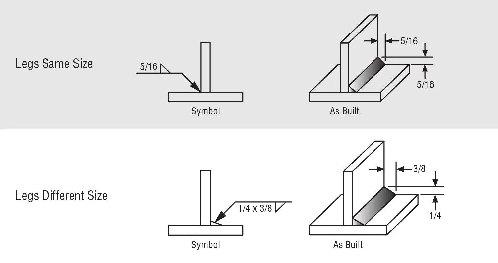
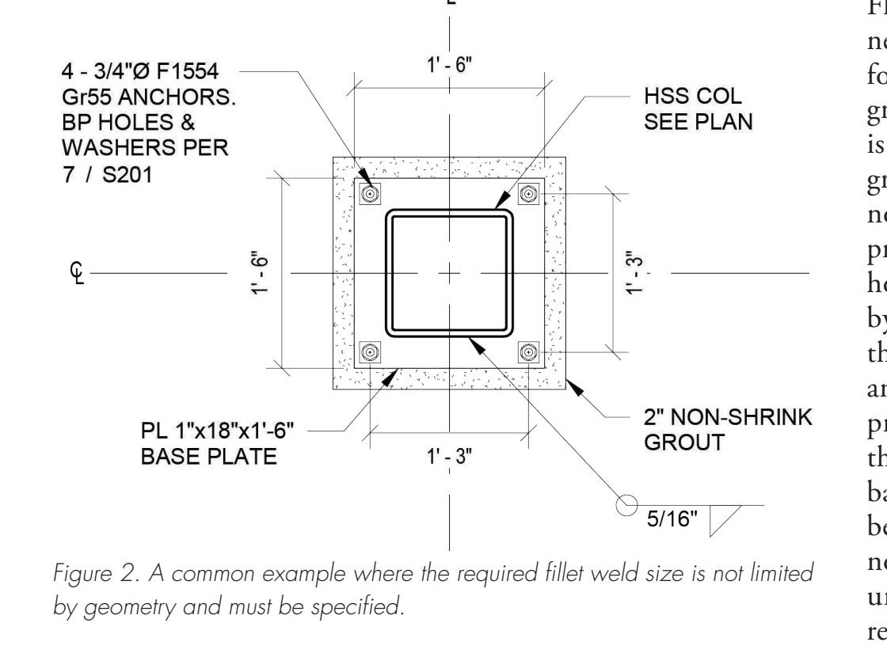
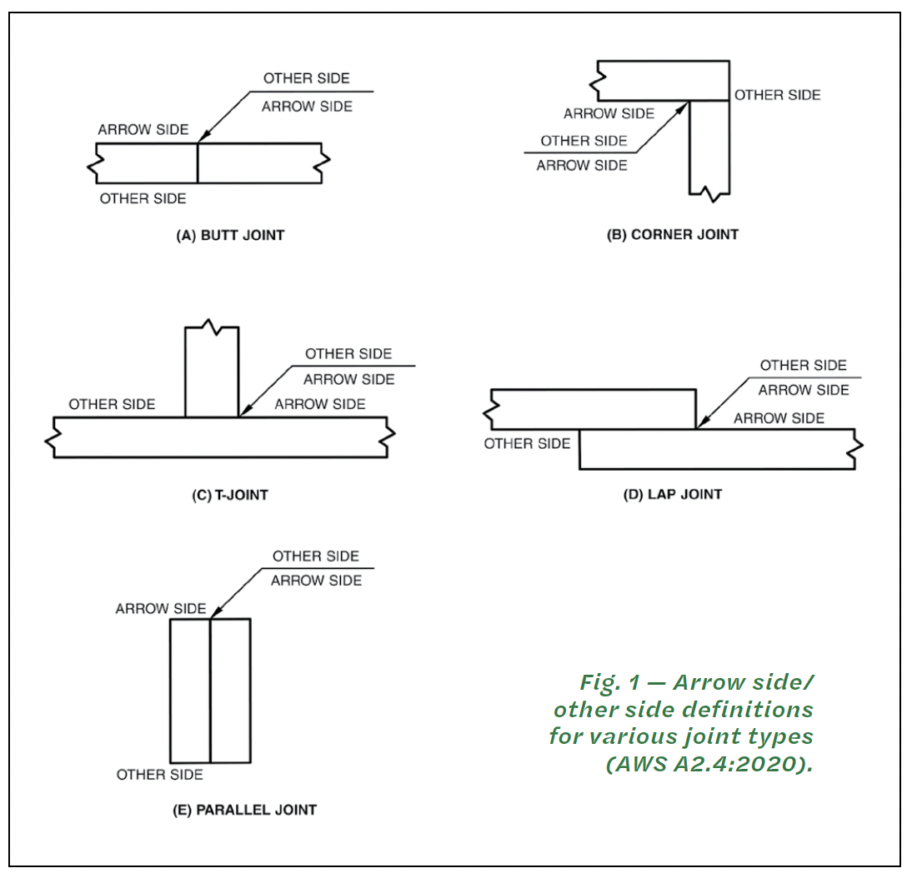
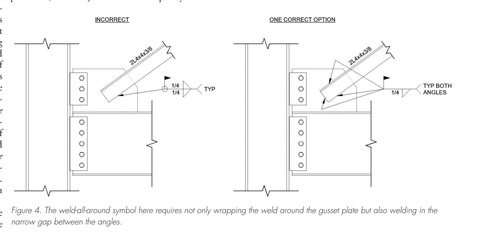
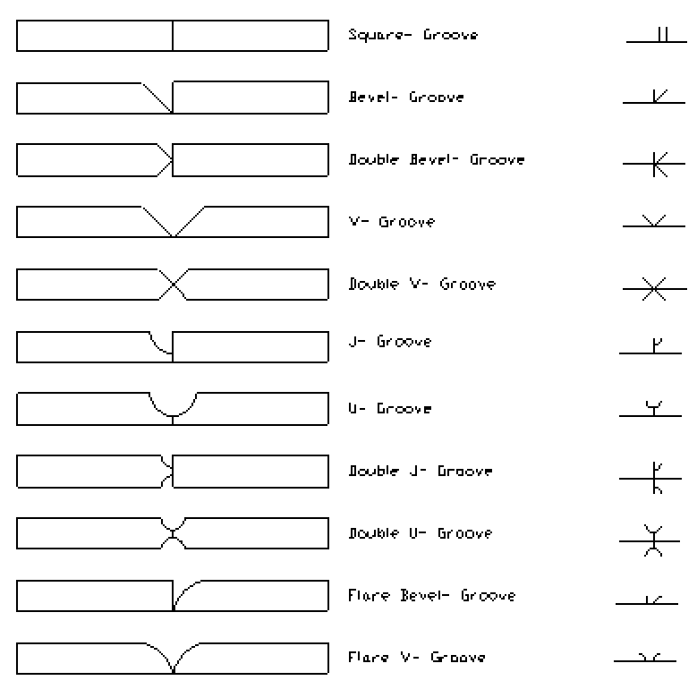
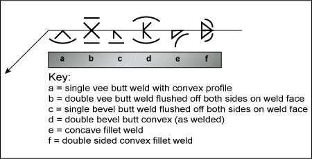
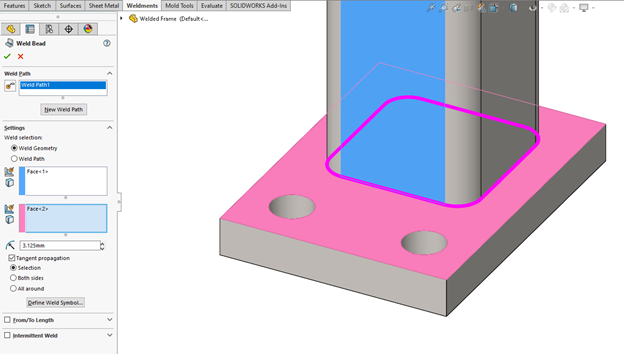
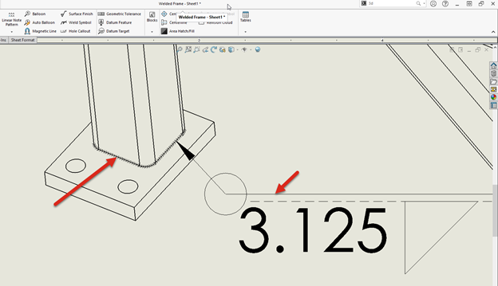

| Item | AWS A2.4 (ours) | ISO 2553 |
|---|---|---|
| Other side | Symbol above the reference line | Dashed second reference line |
| Fillet size | Leg size, left of symbol | z = leg, a = throat prefixes |
| Unsized butt / groove | Read as CJP | Taken as full penetration |
| Process | In the tail | ISO 4063 number in the tail |
| Arrow | Touches the joint; for one-sided preps, points at the prepared part | |


